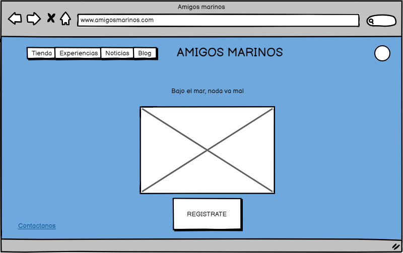
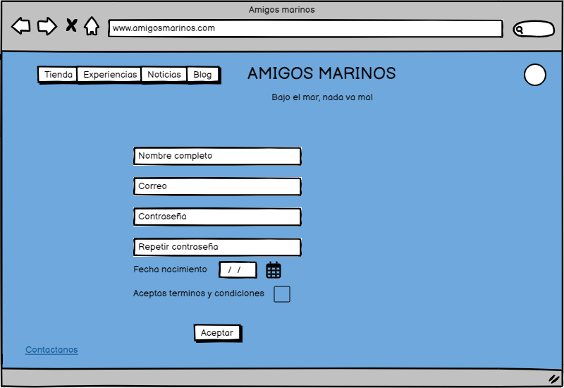
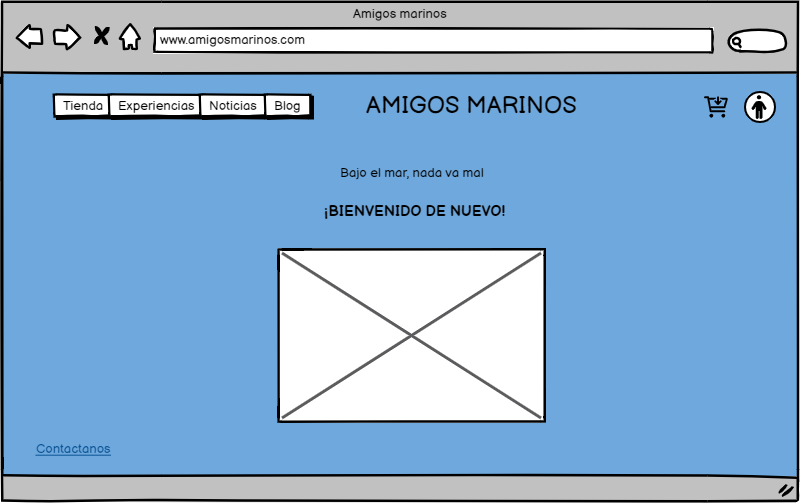
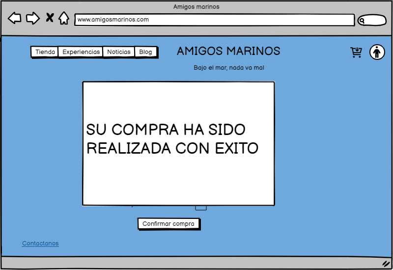
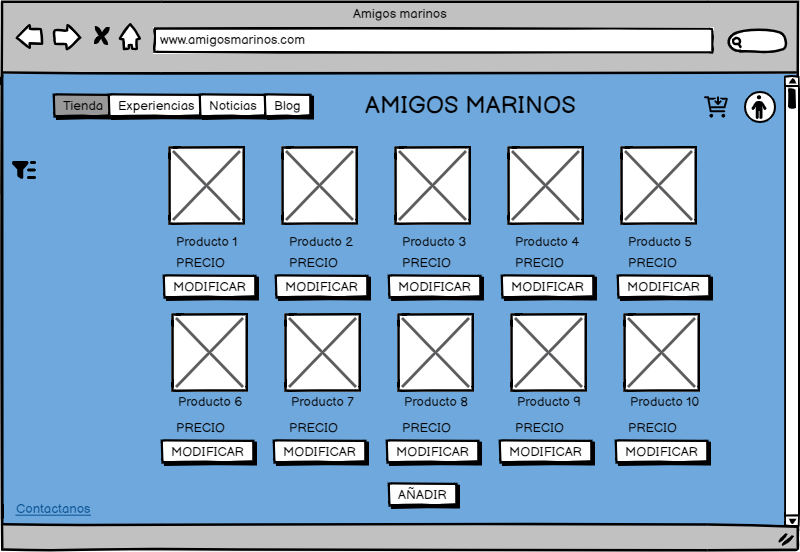
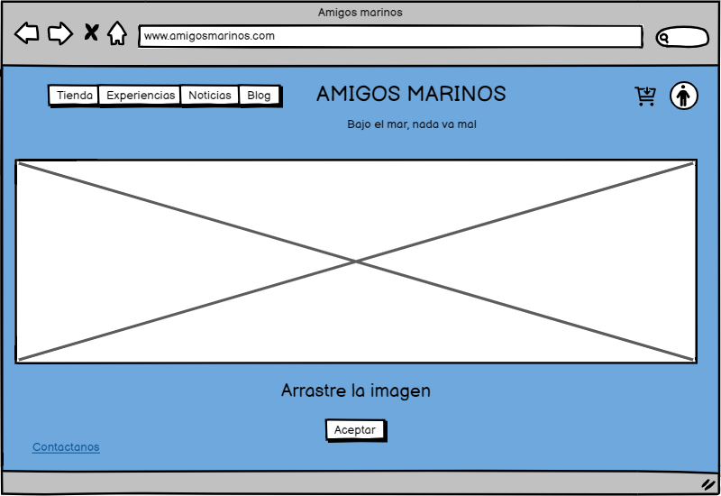

Esta imagen es la primera al entrar en la pagina, es para usuarios no registrados, aparece un boton para registrate, desde esta página y desde todas las demás, puedes acceder a los diferentes apartados de la página web, pulsando en el botón que te lleva a ellos, puede ser pulsando en la tienda, pulsando en experiencias, en noticias o en blog.
Es el formulario del registro del usuario, para usuarios no registrados.
Es la imagen del usuario ya registrado, cambia el icono, si le das a este te lleva a tu perfil y puedes ver los datos.
Esta es la imagen para ver el perfil, aqui puedes revisar los datos y te da la opcion de modificar.

Aqui se modificarian los datos, cambiandolos por los que desees.

Esta imagen muestra la tienda, sale el nombre del producto y el precio, al pulsar en un producto se abre la siguiente imagen.
Esta imagen muestra el producto ampliado con una descripción de este, y da la opción de añadir el producto al carrito.

Esta es la vista que tendra el admin de la tienda, con la opcion para modificar los productos.
En esta imagen da la opcion a los admin de subir a la página una nueva experiencia o un nuevo producto.

Aqui se sube una nueva imagen para el producto.
Aqui se modifica el producto o experiencia.

Aqui se elimina un producto.

Muestra el carrito con todo lo que tenga en el guardado, y da la opción de comprar.

Pide los datos para realizar la compra de todo lo que haya en el carrito.

Muestra un mensaje de éxito al realizar la compra.

Muestra un carrusel de imágenes de las experiencias y te da la opción de comprarlas.

Muestra una experiencia seleccionada y da la opción de añadirla al carrito.

Muestra la parte de experiencias desde la vista del admin,da la opción de modificar la experiencia y da opcion de crear una nueva.

En esta imagen da la opcion a los admin de subir a la página una nueva experiencia o un nuevo producto.

Muestra una experiencia en concreto desde la vista de admin, da opción para cambiar los datos de la experiencia o para eliminarla.

Aqui se modifica la experiencia.

Aqui se elimina la experiencia.

Muestra las noticias que hay actualmente subidas desde la vista de un usuario cualquiera, hay un titulo de noticia y una pequeña descripción.

Muestra una de las noticias ampliada, con toda la información sobre esta al completo.

Muestra las noticias desde la vista de admin,da la opcion de añadir, modificar o de eliminar una noticia.

Esta opción es la de modificar una noticia, en la cual habria algo ya escrito y tendriamos que cambiarlo, o cambiar la imagen.

En esta opcion nos da la opcion de crear una nueva noticia, tendriamos que rellenar los campos vacios y subir una imagen.

Esta ventana emergente aparece al darle a eliminar una de las noticias.

Esta es la vista básica de la parte del blog, nos deja buscar alguna palabra en especifico, responder a algun comentario, tanto propio, como de otras personas, nos deja modificar o eliminar una entrada propia y añadir nuevas entradas.

Esta es la vista a la que accedemos al darle a añadir entrada, en esta tenemos que poner el comentario que queramos poner y darle a publicar.

Esta vista aparece al darle a modificar en uno de los comentarios escritos por el propio usuario, da la opcion a cambiar cualquier parte del texto.

Aparece una ventana emergente que nos dice si queremos eliminar el comentario.

Al pulsar en el link de responder de la primera parte del blog nos lleva aqui, se muestra el comentario al que queremos responder, las respuestas actuales al comentario, incluidas las propias y da la opcion de publicar un nuevo comentario, con la fecha de hoy.

Al darle a modificar nos lleva a esta ventana, en la cual aparece lo que teniamos escrito, y nos deja cambiarlo

Al darle a eliminar, aparece esta ventana emergente que nos dice si estamos seguros

Esta es la vista que tiene del blog un admin, le deja eliminar o responder a cualquiera de los comentario

Esta es la vista cuando un admin le da a responder, le deja eliminar comentarios de comentarios y publicar los suyos propios

Esta ventana emergente es la opción que le sale al admin para eliminar un comentario o entrada